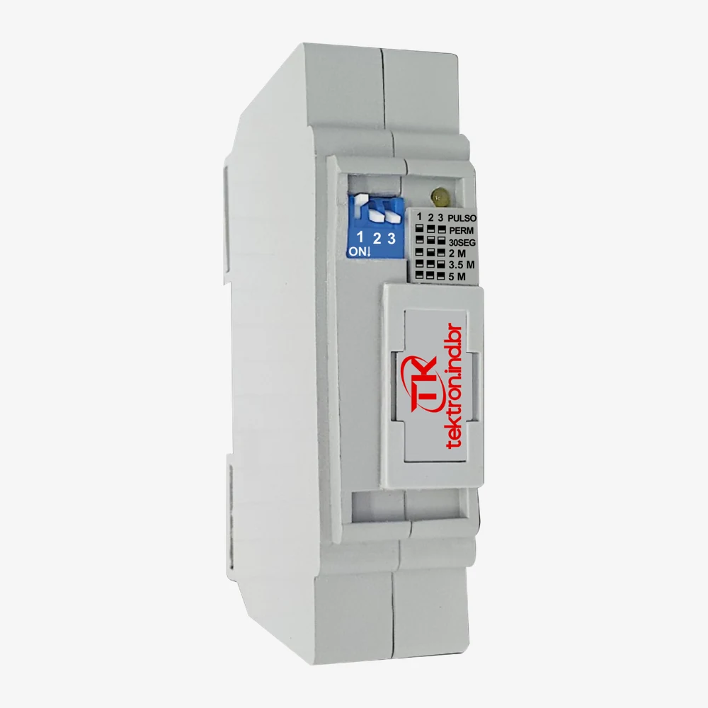

Minuterias para condomínios, escadas e áreas comuns
Em áreas de uso coletivo — escadas, corredores e áreas comuns de um condomínio —, a iluminação costuma ter vários pontos de acionamento espalhados pelo prédio, e precisa apagar sozinha depois de um tempo, sem depender de alguém lembrar. A minuteria concentra esse controle: recebe o comando de qualquer pulsador ligado ao circuito, mantém a luz acesa pelo tempo configurado e desliga automaticamente — seja numa instalação nova, seja na substituição ou modernização de uma minuteria já existente.
O problema
- As luzes de áreas comuns ficam acesas sem necessidade Sem desligamento automático, o consumo em escadas, corredores e garagens depende só de alguém lembrar de apagar.
- Há muitos pontos de acionamento espalhados pelo prédio Vários pulsadores, em andares ou trechos diferentes, precisam controlar a mesma iluminação.
- Uma instalação antiga precisa ser substituída A minuteria existente é de outra marca ou já não funciona bem, mas a fiação do prédio continua a mesma.
- Risco de a luz travar acesa por defeito no pulsador Um pulsador com defeito ou uso indevido pode manter o circuito ligado indefinidamente, se o sistema não tiver proteção contra isso.
O impacto
Em prédios com vários andares, manter a iluminação de áreas comuns acesa por longos períodos pesa no consumo coletivo — e, sem um ponto central de controle, fica difícil saber por que a luz ficou acesa ou apagou antes da hora. Uma instalação com o tempo mal ajustado para a circulação real do prédio gera desconforto (a luz apaga com alguém ainda no trajeto), e uma substituição feita sem identificar a fiação existente pode exigir retrabalho. Sem documentação clara do sistema, a manutenção futura também fica mais confusa.
A solução Tektron
A Tektron fabrica a MC-1500, minuteria coletiva para controle temporizado de circuitos de iluminação. O critério de escolha começa pela situação da instalação — condomínio novo ou substituição de equipamento existente.
Condomínios, escadas, corredores e áreas comuns com vários pontos de acionamento
Quando vários pulsadores — em andares ou trechos diferentes do prédio — precisam acionar a mesma iluminação, a MC-1500 centraliza esse controle: qualquer pulsador ligado ao circuito aciona a luz, que permanece ligada pelo tempo configurado e desliga sozinha em seguida.

MC-1500
Minuteria coletiva, acionamento por pulsador tipo campainha.
Substituição ou modernização de minuteria antiga
A MC-1500, apresentada acima, tem ligação compatível com minuterias de outras marcas — a substituição pode ser feita sem trocar a fiação já instalada. Ela também conta com sistema anti-travamento do pulsador, com sinalização por LED: se um pulsador apresentar defeito ou uso indevido, o sistema evita que a luz fique travada acesa.
Como a minuteria funciona
- O usuário pressiona um pulsador.
- A minuteria recebe o comando.
- A iluminação é acionada.
- O tempo configurado começa a ser contado.
- A iluminação é desligada automaticamente.
Instalação existente e número de fios
A MC-1500 usa 4 fios, por causa do condutor dedicado ao pulsador. É por isso que a instalação existente importa: antes de comprar uma MC-1500 para substituir uma minuteria antiga, identifique quantos condutores chegam ao ponto e qual a função de cada um.
A MC-1500 tem ligação compatível com minuterias de outras marcas, mas isso pressupõe uma instalação com a mesma lógica de 4 fios — não presuma compatibilidade com uma quantidade diferente de condutores sem confirmar antes. Em caso de dúvida sobre a fiação existente, confirme o circuito com um eletricista ou com o suporte técnico antes de prosseguir com a substituição.
Temporização
A MC-1500 tem cinco configurações, por chave dip de 3 pinos: quatro tempos de desligamento — 30 segundos, 2 minutos, 3,5 minutos e 5 minutos — e um modo permanente, em que a luz não desliga sozinha. A página da MC-1500 traz a posição das chaves para cada uma. Um tempo curto demais pode apagar a luz antes que a pessoa termine o trajeto — por exemplo, antes de subir todos os lances de uma escada; um tempo mais longo mantém a iluminação por mais tempo do que o necessário depois que a circulação já terminou. A escolha do tempo deve considerar o percurso real de quem usa o ambiente, não só a distância mais curta entre dois pontos.
Características que orientam a escolha
Além da situação de instalação, estes critérios ajudam a confirmar se a MC-1500 atende ao seu caso:
Instalação e ligação elétrica
A MC-1500 usa 4 fios, bivolt (127 V / 220 V):
Essa é uma fiação diferente da usada pelos sensores de movimento desta linha (3 fios, sem condutor de pulsador) — o diagrama elétrico compartilhado entre as páginas de sensores não se aplica à MC-1500. A minuteria tem seu próprio circuito, com o condutor adicional do pulsador.
Boas práticas de instalação:
- Desenergize o circuito antes de instalar.
- A MC-1500 é instalada no quadro elétrico, encaixada como um disjuntor — não é um produto de parede.
- Confira a tensão (127 V ou 220 V) e a potência da carga: até 200 W em 127 V ou 350 W em 220 V.
- A MC-1500 tem fusível de proteção de 10 A.
- Ao substituir uma minuteria antiga, identifique a fiação existente antes de prosseguir.
- Respeite o diagrama de ligação oficial do equipamento — a MC-1500 pode exigir um diagrama próprio, diferente do diagrama dos sensores de movimento.
Resultado esperado
O acionamento fica disponível em todos os pontos definidos, a iluminação permanece ligada durante o período necessário e desliga automaticamente depois — reduzindo o tempo de luz acesa sem necessidade, preservando a lógica coletiva de acionamento já existente no prédio e tornando o funcionamento do sistema mais previsível para quem administra a instalação.
Fabricação e suporte
A MC-1500 é fabricada no Brasil pela Tektron, com documentação técnica e diagrama de ligação disponíveis, e suporte técnico especializado para dúvidas de substituição e instalação em condomínios e áreas comuns.
Perguntas frequentes
- O que é uma minuteria?
- Um equipamento que recebe o comando de um ou mais pulsadores, mantém a iluminação acesa por um tempo configurado e desliga automaticamente.
- A minuteria funciona com vários pulsadores?
- Sim — a MC-1500 é uma minuteria coletiva, feita para mais de um pulsador no mesmo circuito.
- Posso substituir uma minuteria antiga?
- Sim, a MC-1500 tem ligação compatível com outras marcas, sem trocar a fiação — confirme antes que a instalação existente tem os 4 condutores necessários.
- Quantos fios são necessários?
- 4 fios: fase (vermelho), neutro ou 2ª fase (preto), retorno (verde) e pulsador (branco).
- Como escolher o tempo?
- Considere o percurso real de quem usa o ambiente, não só a distância mais curta — a MC-1500 tem 4 opções: 30 segundos, 2 minutos, 3,5 minutos e 5 minutos.
- Onde a minuteria é instalada?
- No quadro elétrico, encaixada como um disjuntor — não é um produto de parede.
- O que verificar antes da compra?
- A fiação existente (incluindo o fio do pulsador), a tensão do circuito, a potência da carga e o espaço disponível no quadro elétrico. Em caso de dúvida, consulte um eletricista ou o suporte técnico.
Outras páginas de aplicações
- Sensor de movimento para caixa 4x2 Para automatizar um interruptor já existente, sem trocar o ponto elétrico.
- Sensor de movimento para instalação no teto Sobrepor, embutir no forro, cobertura 360° ou movimentação lenta — por tipo de teto.
- Soluções para iluminação de áreas externas Sensores de movimento e fotocélulas para parede, poste ou área externa coberta.
- Sensores para corredores, escadas e grandes ambientes Para acionamento automático por movimento, sem depender de pulsador.
Próximo passo
Antes de escolher, confirme a fiação já instalada — principalmente se for substituir uma minuteria antiga. Depois disso, o próximo passo é o mesmo: